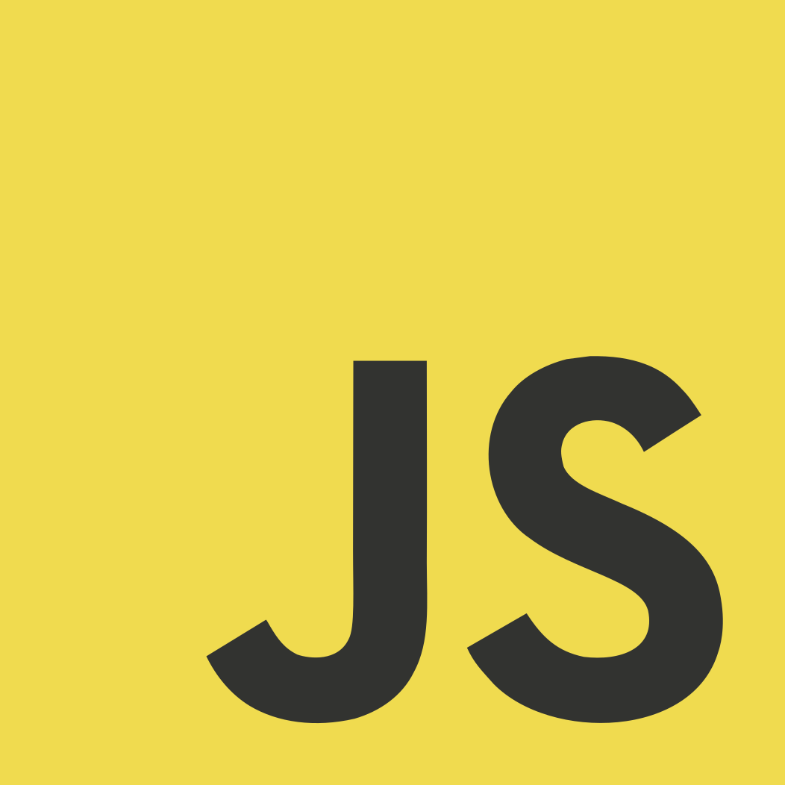
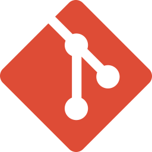

Skills
-

HTML5 構造的マークアップStructural Markup
Self-Evaluation: 95% Work-Experience: 10+ years
Related Tech:
- Markdown
-

CSS3 レスポンシブデザインQualify, Animate, Reuse
Self-Evaluation: 75% Work-Experience: 10+ years
Related Tech:
- SASS (with FLOCSS)
-
 JavaScript インタラクション構築Dom, Async, Api
Self-Evaluation: 40% Work-Experience: 5+ years
Related Tech:
- Canvas API
-
 Git コード管理Code Management
Self-Evaluation: 15% Work-Experience: 1+ years
Related Tech:
- Shell Script
-

Node.js JavaScript開発環境JS Development Environment
Self-Evaluation: 15% Work-Experience: 1+ years
Related Tech:
- Task Runner
- Template Engine
-
Things,
plan to learning:- Python
- Lua
Records
-
2003~2005, Age 19~21: Professional training college
デジタルクリエイティブ学部
See more
ピクサー・アニメーション・スタジオの作品に憧れ、映像分野についての基礎的な知識を身に付ける。3DCGの制作から実写合成、音楽アーティストのPV制作、架空CMの企画と台本作成など、意欲的に挑戦。また、ウェブサイト制作技術にも興味を持ち、独学で学び始め、ものづくりへの強い関心を持つようになる。
-
2005~2006, Age 21~22: Photographer Assistant
コマーシャルフォトスタジオ（アシスタント）
See more
チラシに掲載する日用品から、モデル・美術品などの撮影業務に携わり、照明技術・撮影技術に触れる。
-
2006~2020, Age 22~36: Web Designer (with focus on the photograph)
ウェブ制作会社（ウェブデザイナー）
See more
ゲーム制作会社や玩具製造販売会社とのタイアップなどでデザインチーフを担当し、自社コンテンツの運営、企画にも関わる。
新聞社（ウェブデザイナー）
See more
サイト各種更新作業・特集ページ作成・新聞広告やチラシ作成などの業務を担当する。
-
2015~2020, Age 32~36: Front-End Engineer (with focus on the photograph, design)
ウェブ制作会社（ウェブデザイナー兼フロントエンドエンジニア）
See more
Apps (using at works)
- Visual Studio Code
Adobe Photoshop (~CS5.1)Adobe Illustrator (~CS5.5)- Node.js
- Git Bash
※2025年時点での概算